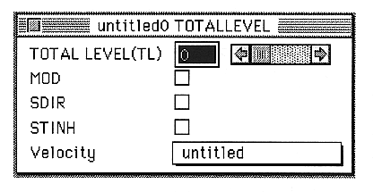

KEY RATE SCALE(KRS)
Sets the degree of EG key rate scaling.
You can set a value between 0 and 15.
LPSLNK
If the address of the sound slot input data to be read exceeds the loop start address, EG transitions to decay 1 even if EG is not “000”.

TOTAL LEVEL(LFORE)
Sets the amount of attenuation applied to the EG value.
You can set a value between 0 and 127.
MOD
Use sound data as a signal for modulation in DSP.
SDIR
Sound data is output without being multiplied by EG, TL (volume), and ALFO.
STINH
Writing slot output to the data buffer is prohibited.
Velocity
Select the velocity.